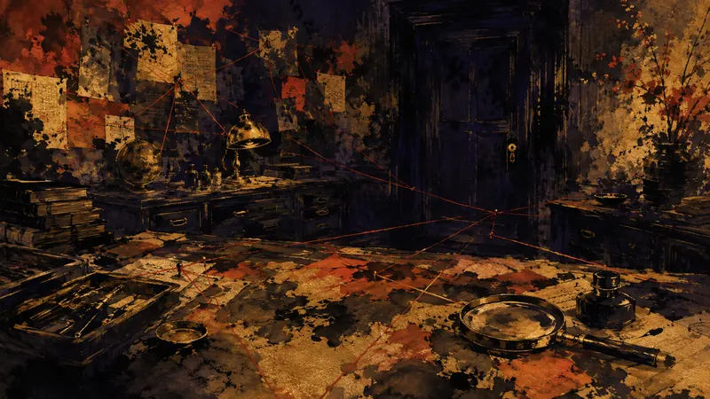

先鴉｜夜明けの便り
法医学推理アドベンチャー『フレミング邸殺人事件』11月3日発売予定（訳）
プレイヤーの主体性：政策がそれをどう制限し、産業がそれをどう形づくり、物語設計がそれをどう実現するか。

1959年のイングランドを舞台にした法医学推理アドベンチャーゲームで、11月3日に発売予定だ。プレイヤーは死因の調査から始め、手がかりを少しずつ整理しながら、連続殺人事件を追っていく。本作の中心にあるのは、場面を素早く進めることではなく、細部を観察し、自分なりの推理を組み立てることだ。この設計により、事件を調べる過程そのものがゲーム内容になっており、時間をかけて答えを組み立てるのが好きなプレイヤーには、より魅力的に映るかもしれない。一方で、実際のテンポに十分な柔軟性があるのか、手がかりを何度も確認する負担がどの程度なのかについては、現時点の情報では明らかになっていない。
出典プレビュー
“死亡診断書作成”で真相に迫るミステリー『フレミング邸の殺人事件』11月3日リリースへ。「死因調査」からじっくり考察、連続殺人事件の真相に迫る
出典：AUTOMATON
先鴉の視点
死因の調査を入口にすることで、プレイヤーが判断するための時間そのものを、急いで埋めるべき空白ではなくゲーム内容にしている。手がかりをじっくり整理したい人にとっては、自分で答えを導く余地が残されている。何度も確認する作業が苦手な人は、まず本作に十分なテンポの柔軟性があるかを見極める必要がある。
本セクションはAIが作成した見解であり、自動公開後に人が確認しています。